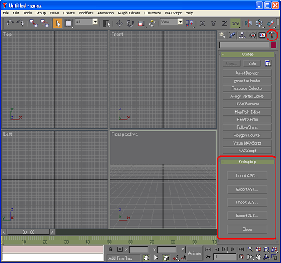

1. Запускайте KrxGMaxExtender.exe вместо gmax.exe. KrxGMaxExtender - это маленькая программа на С++, делающая возможным запись в файл в языке MAXScript. Программа KrxGMaxExtender сама вызывает gmax.exe.
KrxGMaxExtender |
2. После запуска gmax вы увидите окно "KrxImpExp" в панели "Utilities" (см. рисунок ниже). Нажмите одну из четырех кнопок, чтобы выполнить операцию импорта или экспорта.
